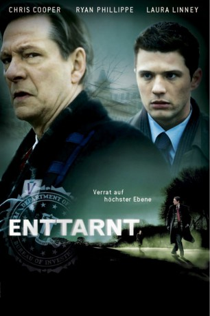

gesehen am 25.09.2015
gesehen am 25.09.2015Alternativ: Breach gesehen am 25.09.2015
 
 IMDB-Wertung: 7.0 / 10
IMDB-Wertung: 7.0 / 10  Metascore:
Metascore: 
Frühjahr 2001: der FBI-Agenten-Anwärter Eric O'Neill wird von der Chefin der Behörde Kate Burroughs auf den Agenten Robert Hanssen angesetzt, weil dieser sexuell abartig sei. Hanssen, ein überreligiöser Familienvater, der niemandem zu vertrauen scheint und sich durch verinnerlichten Patriotismus auszuzeichnen scheint, bietet aber O'Neill keine Angriffsfläche, sondern drängt sich praktisch in dessen Leben. Erst als O'Neill der Kragen platzt, erfährt er, daß Hanssen ein Doppelagent und Verräter sein soll, der seit Jahren Staatsgeheimnisse an die Sowjets verkauft hat. Bald wird O'Neills Aufgabe zu einem gefährlichen Katz-und-Maus-Spiel...
Jahr: 2007
Dauer: 110 Minuten
FSK: 12
Land: USA Studio: Universal PicturesTonspuren: DD5.1 - ,
Untertitel:
Auflösung: 1080p (1920x1080) Größe: 8468 MB
Genre: Biographie, Krimi, Drama, Geschichte, Thriller
Regisseur: Billy Ray
Drehbuch: Adam Mazer, William L. Rotko, Billy Ray, Adam Mazer, William L. Rotko
Soundtrack: Mychael Danna
Darsteller:
 Chris Cooper als Robert Hanssen
Chris Cooper als Robert Hanssen Ryan Phillippe als Eric O'Neill
Ryan Phillippe als Eric O'Neill Laura Linney als Kate Burroughs
Laura Linney als Kate Burroughs Gary Cole als Rich Garces
Gary Cole als Rich Garces Dennis Haysbert als Dean Plesac
Dennis Haysbert als Dean Plesac Kathleen Quinlan als Bonnie Hanssen
Kathleen Quinlan als Bonnie Hanssen Bruce Davison als John O'Neill
Bruce Davison als John O'Neill Tom Barnett als Jim Olsen
Tom Barnett als Jim Olsen Jonathan Potts als D.I.A. Suit
Jonathan Potts als D.I.A. Suit Mary Jo Deschanel als Vivian O'Neill
Mary Jo Deschanel als Vivian O'Neill Chris Owens als Trunk Cataloguer
Chris Owens als Trunk Cataloguer Aaron Michael Lacey als FBI Agent , uncredited
Aaron Michael Lacey als FBI Agent , uncredited Mike Monroe als D.C. Police Officer , uncredited
Mike Monroe als D.C. Police Officer , uncredited Talia Russo als Woman on Cell Phone , uncredited
Talia Russo als Woman on Cell Phone , uncredited David Huband als Photographer
David Huband als Photographer Richard Fitzpatrick als Michael Rochford
Richard Fitzpatrick als Michael RochfordDatei: X:\2007(A-F)\Enttarnt - Verrat auf höchster Ebene (2007, FSK12, 1920x1080).mkv seit 14.09.2015
Festplatte: HD 2007(A-Z)-2008(A-F)
 Es gibt insgesamt 65 Filme in der Gruppe '2007(A-F)'
Es gibt insgesamt 65 Filme in der Gruppe '2007(A-F)'